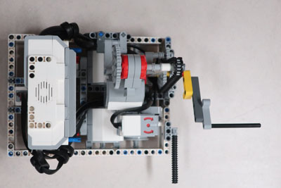
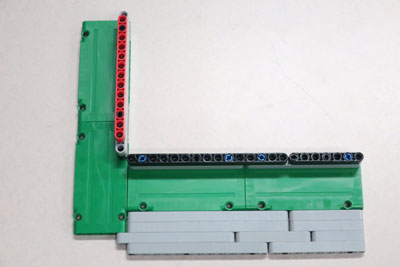
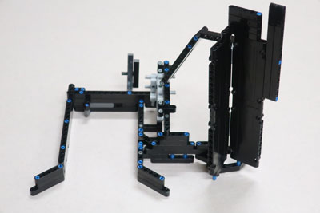
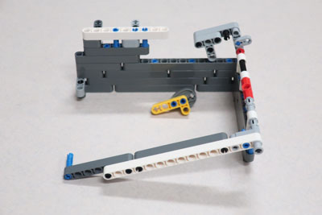
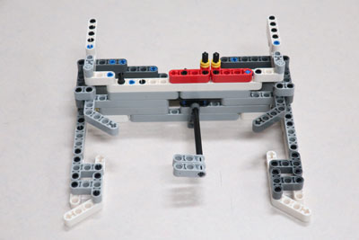
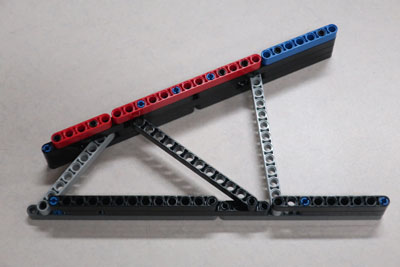
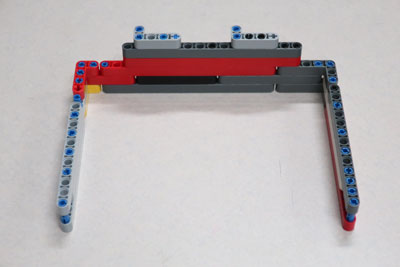

When designing our base robot, we establish criteria at the outset, such as desired footprint, height, balance, drive train, sensors to be used, user interface, etc. to arrive at a working prototype. We also strive to design and build a base robot which is robust and which features a frame around the chassis to provide structural rigidity as well as means to square up against walls and mission models. We design attachments keeping in mind that these attachments need to be easy to install and remove, robust, and both passive and multi-purpose whenever possible. From testing the prototype base robot and the attachments, we make revisions to our work in order to combine and speed up missions and increase repeatability to achieve maximum efficiency, through completion time and size. By the end of the season, our attachments will often be in their fifth or sixth iteration.
Our robot is very robust and compact with a frame for strength. We use three light sensors and a gyro sensor for maximum flexibility, with shielding from ambient light. Our robot has small guide wheels on the back, which are steering neutral, and small sized wheels with a small diameter. These small wheels allow for more accurate movements as they decrease the error associated with the drive motor rotation sensors. However, we sacrifice some speed due to our wheels having a small diameter.
When first designing our robot we wanted to make sure that all the light/color sensors behaved similarly. Color sensors each return small differences in readings because of variations in manufacturing. For example, if you were to place two different color sensors on the same black line, each would return different values for light intensity. Sometimes the difference may be significant. To make sure that all our light sensors had about the same reading we completely shielded ten color sensors to eliminate the variable of ambient light and recorded the reading for each of the color sensors on black and white. We then found the three color sensors which have the closest reading to each other and used those three color sensors on the robot.
We have found that the move functions provided by the EV3 Python suite are unreliable. Although they have a built in PID feature, they still do not move the robot in a straight line. To test this, we set a designated starting spot for the robot and then we ran it until it hit the wall on the other side of the table. We repeated this dozens of times and found that each time it would end up in a different spot on the other side of the table. Each time it would be up to an inch away from the previous run. Then, we made our own error-corrected movement function (which you can read about in the programming section of this website). We conducted the same experiment using our block and found that there was much less error and the robot would consistently end up in the same position on the table.
Our light sensors were dependent on the distance they were away from the mat. We found out that our light sensors were too low to the mat and were not picking up proper light readings. We used the EV3 experiment which can track the different movements on the motors and sensors. We tracked the readings to see if they would change properly from white to black; 100 to 0. They did not reach those values so we realized it was too far from the mat.
| Name of Attachment | Description | Picture |
|---|---|---|
| Traffic Jam | This is our simplest attachment and consists of a single multi-purpose arm connected to the D motor. The robot uses it to life the Traffic Jam mission halfway. Then, the robot pivots to completely raise the Traffic Jam. The robot then pivots until it detects the white, then black, then white line. The robot then uses PID line following to drive by the Swing, where a flexible tube on the robot releases the Swing. Next, the robot pivots north and drives until it detects a white line. The arm is moved to the left side and the robot stops in front of the Elevator. The arm swings the elevator into scoring position. The robot then pivots and drives toward the Steel Construction mission where it squares up to the mission model. The arm is used to raise the Steel Construction into scoring position. |  |
| Jig: Traffic Jam | This attachment is a jig that lines the robot up for the Traffic Jam mission. The jig is pushed up against the south wall, which allows for maximum accuracy when positioning and launching the robot. |  |
| Craney | This attachment is used to drop the Hooked Blue Unit onto the Blue Unit within the Blue Circle. It is pushed into the Crane where a beam pushes the lever to swing the Crane and the Blue Unit is pushed into the Blue Circle. A tall wall lines up with the Hooked Blue Unit while another beam pushes the lever to release the string, dropping the Hooked Blue Unit onto the Blue Unit in the Blue Circle. |  |
| Red Circle | This attachment is a small frame with a lift arm controlled by the D motor. The robot carries a variety of units from the Design and Build mission, and from the Innovative Architecture mission. The robot takes these units to the Red Circle where the lift arm is raised, releasing the units. The robot then positions itself to drive up the ramp. By spinning the D motor in the opposite direction, the attachment is released from the robot, allowing the robot to climb the ramp more easily. The robot then drives up the ramp. |  |
| Housey | This attachment pushes 3 beams down at the Safety Factor mission model. The robot pushes the attachment into Safety Factor. A funnel is used to perfectly line up the attachment. Beams are used to push two lateral supports and an elastic-band powered arm pushes a third support in the middle. This also locks the attachment onto the mission model which is left behind when the robot backs up. |  |
| Jig: Housey | This attachment is a jig that lines the robot up for the Traffic Jam mission. The jig is pushed up against the south wall and the edge of base, which allows for maximum accuracy when positioning and launching the robot. |  |
| Black Circle | This attachment pushes a variety of units from the Design and Build mission into the black circle north of the launch area. |  |